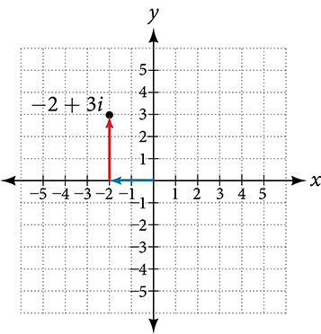
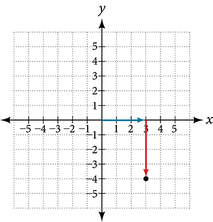
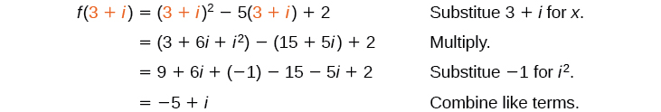
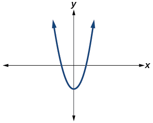
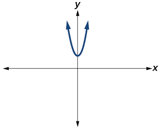
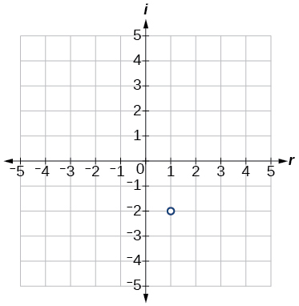
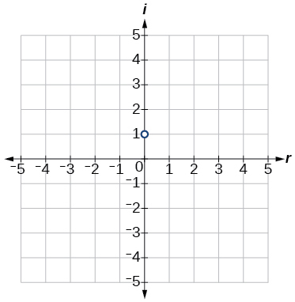

Complex Numbers
The study of mathematics continuously builds upon itself. Negative integers, for example, fill a void left by the set of positive integers. The set of rational numbers, in turn, fills a void left by the set of integers. The set of real numbers fills a void left by the set of rational numbers. Not surprisingly, the set of real numbers has voids as well. For example, we still have no solution to equations such as
Our best guesses might be +2 or –2. But if we test +2 in this equation, it does not work. If we test –2, it does not work. If we want to have a solution for this equation, we will have to go farther than we have so far. After all, to this point we have described the square root of a negative number as undefined. Fortunately, there is another system of numbers that provides solutions to problems such as these. In this section, we will explore this number system and how to work within it.
Expressing Square Roots of Negative Numbers as Multiples of i
We know how to find the square root of any positive real number. In a similar way, we can find the square root of a negative number. The difference is that the root is not real. If the value in the radicand is negative, the root is said to be an imaginary number. The imaginary number is defined as the square root of negative 1.
So, using properties of radicals,
We can write the square root of any negative number as a multiple of Consider the square root of –25.
We use and not because the principal root of is the positive root.
A complex number is the sum of a real number and an imaginary number. A complex number is expressed in standard form when written where is the real part and is the imaginary part. For example, is a complex number. So, too, is
Imaginary numbers are distinguished from real numbers because a squared imaginary number produces a negative real number. Recall, when a positive real number is squared, the result is a positive real number and when a negative real number is squared, again, the result is a positive real number. Complex numbers are a combination of real and imaginary numbers.
Expressing an Imaginary Number in Standard Form
Express in standard form.
Solution
In standard form, this is
Plotting a Complex Number on the Complex Plane
We cannot plot complex numbers on a number line as we might real numbers. However, we can still represent them graphically. To represent a complex number we need to address the two components of the number. We use the complex plane, which is a coordinate system in which the horizontal axis represents the real component and the vertical axis represents the imaginary component. Complex numbers are the points on the plane, expressed as ordered pairs where represents the coordinate for the horizontal axis and represents the coordinate for the vertical axis.
Let’s consider the number The real part of the complex number is and the imaginary part is We plot the ordered pair to represent the complex number as shown in Figure 1.

Plotting a Complex Number on the Complex Plane
Plot the complex number on the complex plane.
Solution
The real part of the complex number is and the imaginary part is We plot the ordered pair as shown in Figure 3.

Adding and Subtracting Complex Numbers
Just as with real numbers, we can perform arithmetic operations on complex numbers. To add or subtract complex numbers, we combine the real parts and combine the imaginary parts.
Adding Complex Numbers
Add and
Solution
We add the real parts and add the imaginary parts.
Multiplying Complex Numbers
Multiplying complex numbers is much like multiplying binomials. The major difference is that we work with the real and imaginary parts separately.
Multiplying a Complex Number by a Real Number
Let’s begin by multiplying a complex number by a real number. We distribute the real number just as we would with a binomial. So, for example,
Multiplying a Complex Number by a Real Number
Find the product
Solution
Distribute the 4.
Multiplying Complex Numbers Together
Now, let’s multiply two complex numbers. We can use either the distributive property or the FOIL method. Recall that FOIL is an acronym for multiplying First, Outer, Inner, and Last terms together. Using either the distributive property or the FOIL method, we get
Because we have
To simplify, we combine the real parts, and we combine the imaginary parts.
Multiplying a Complex Number by a Complex Number
Multiply
Solution
Use
Dividing Complex Numbers
Division of two complex numbers is more complicated than addition, subtraction, and multiplication because we cannot divide by an imaginary number, meaning that any fraction must have a real-number denominator. We need to find a term by which we can multiply the numerator and the denominator that will eliminate the imaginary portion of the denominator so that we end up with a real number as the denominator. This term is called the complex conjugate of the denominator, which is found by changing the sign of the imaginary part of the complex number. In other words, the complex conjugate of is
Note that complex conjugates have a reciprocal relationship: The complex conjugate of is and the complex conjugate of is Further, when a quadratic equation with real coefficients has complex solutions, the solutions are always complex conjugates of one another.
Suppose we want to divide by where neither nor equals zero. We first write the division as a fraction, then find the complex conjugate of the denominator, and multiply.
Multiply the numerator and denominator by the complex conjugate of the denominator.
Apply the distributive property.
Simplify, remembering that
Finding Complex Conjugates
Find the complex conjugate of each number.
- ⓐ
- ⓑ
Solution
- ⓐ The number is already in the form The complex conjugate is or
- ⓑ We can rewrite this number in the form as The complex conjugate is or This can be written simply as
Dividing Complex Numbers
Divide by
Solution
We begin by writing the problem as a fraction.
Then we multiply the numerator and denominator by the complex conjugate of the denominator.
To multiply two complex numbers, we expand the product as we would with polynomials (the process commonly called FOIL).
Note that this expresses the quotient in standard form.
Substituting a Complex Number into a Polynomial Function
Let Evaluate
Solution
Substitute into the function and simplify.

Analysis
We write Notice that the input is and the output is
Substituting an Imaginary Number in a Rational Function
Let Evaluate
Solution
Substitute and simplify.
Simplifying Powers of i
The powers of are cyclic. Let’s look at what happens when we raise to increasing powers.
We can see that when we get to the fifth power of it is equal to the first power. As we continue to multiply by itself for increasing powers, we will see a cycle of 4. Let’s examine the next 4 powers of
Simplifying Powers of
Evaluate
Solution
Since we can simplify the problem by factoring out as many factors of as possible. To do so, first determine how many times 4 goes into 35:
Key Concepts
- The square root of any negative number can be written as a multiple of See Example 1.
- To plot a complex number, we use two number lines, crossed to form the complex plane. The horizontal axis is the real axis, and the vertical axis is the imaginary axis. See Example 2.
- Complex numbers can be added and subtracted by combining the real parts and combining the imaginary parts. See Example 3.
- Complex numbers can be multiplied and divided.
- To multiply complex numbers, distribute just as with polynomials. See Example 4, Example 5, and Example 8.
- To divide complex numbers, multiply both the numerator and denominator by the complex conjugate of the denominator to eliminate the complex number from the denominator. See Example 6, Example 7, and Example 9.
- The powers of are cyclic, repeating every fourth one. See Example 10.
Verbal
Explain how to add complex numbers.
Solution
Add the real parts together and the imaginary parts together.
What is the basic principle in multiplication of complex numbers?
Give an example to show the product of two imaginary numbers is not always imaginary.
Solution
times equals –1, which is not imaginary. (answers vary)
What is a characteristic of the plot of a real number in the complex plane?
Algebraic
For the following exercises, evaluate the algebraic expressions.
evaluate
Solution
evaluate
evaluate
Solution
evaluate
evaluate
Solution
evaluate
Graphical
For the following exercises, determine the number of real and nonreal solutions for each quadratic function shown.

Solution
2 real and 0 nonreal

For the following exercises, plot the complex numbers on the complex plane.
Solution

Solution

Numeric
For the following exercises, perform the indicated operation and express the result as a simplified complex number.
Solution
Solution
Solution
Solution
Solution
Solution
Solution
25
Solution
Solution
Solution
Solution
Solution
Solution
Solution
Technology
For the following exercises, use a calculator to help answer the questions.
Evaluate for Predict the value if
Evaluate for Predict the value if
Solution
128i
Evaluate for . Predict the value for
Show that a solution of is
Solution
Show that a solution of is
Extensions
For the following exercises, evaluate the expressions, writing the result as a simplified complex number.
Solution
Solution
0
Solution
5 – 5i
Solution
Solution
Analysis
Although we have seen that we can find the complex conjugate of an imaginary number, in practice we generally find the complex conjugates of only complex numbers with both a real and an imaginary component. To obtain a real number from an imaginary number, we can simply multiply by